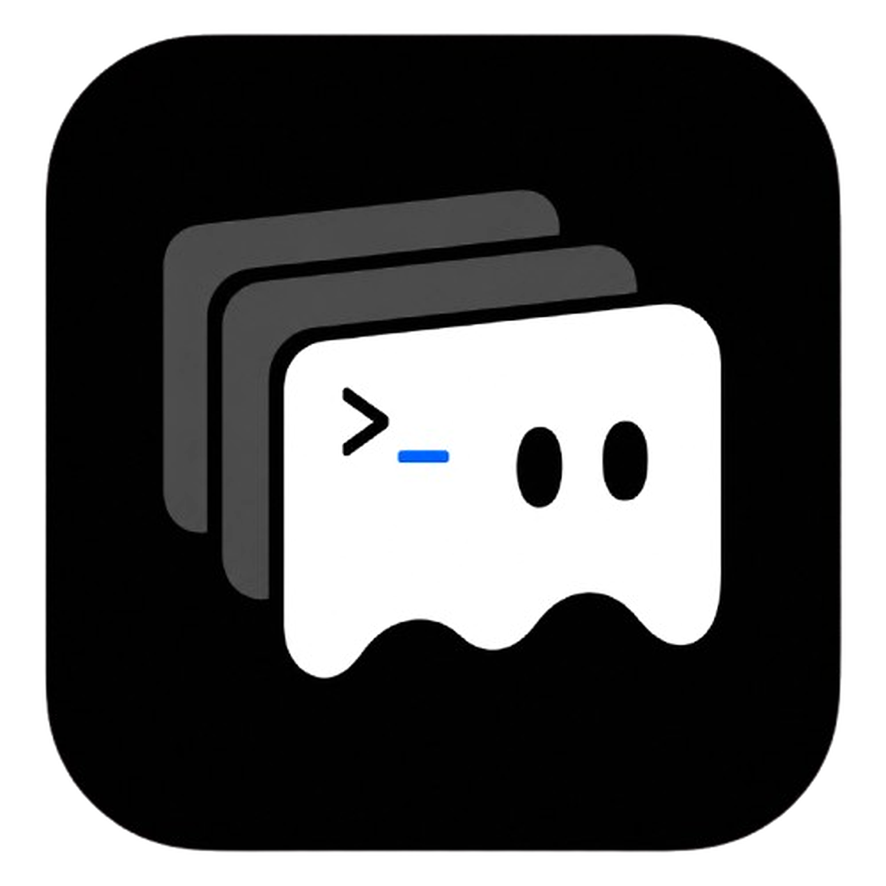

zpc@proghostty ~/projects/proghostty % swift test Test run started. Suite "Terminal renderer backend" passed. Suite "Terminal surface" passed. Suite "Workspace store" passed. # focused pane: text stays crisp, background stays quiet zpc@proghostty ~/projects/proghostty % git status --short ?? docs/design/ghost-theme-preview.html zpc@proghostty ~/projects/proghostty %

Ghost Theme Direction
不是贴图，而是把 Ghost 做成材质、层次、残影和低饱和高光。
workspace % codex --yolo Analyzing terminal rendering path... Using Ghostty VT snapshot. Dirty rows: 4 Pixel scroll: available non-focused pane recedes by foreground, not by painting a separate background.
logs % tail -f renderer.log [cell-grid] viewport rows 42 [scroll] overscan top 2 bottom 2 [resize] defer alternate screen [focus] pane 7E2F active subtle border only appears where it helps structure.
Ghost as Presence
Ghost 感来自窗口边缘的微弱雾化、浮层材质和文字明度层次。终端内容仍然最清晰，不引入常驻装饰。
Ghost Trail
切换 workspace、显示 toast、打开浮层时可以有 120-180ms 的残影式过渡。只解释状态变化，不做动画表演。
Spectral Accent
主题只在小面积使用冷白、幽青或雾紫。分屏边界、URL hover、当前 workspace 和 toast 可以共享这一组高光。